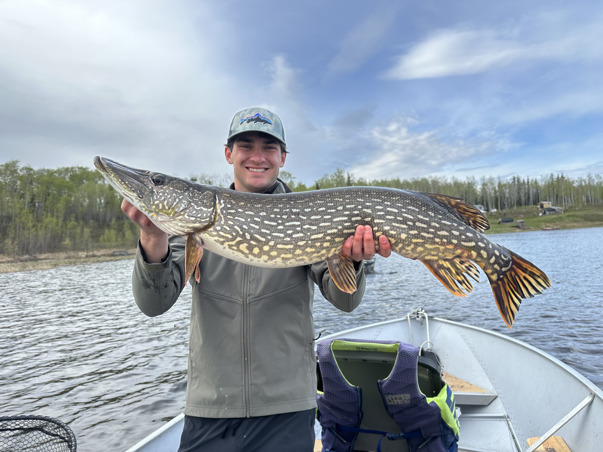
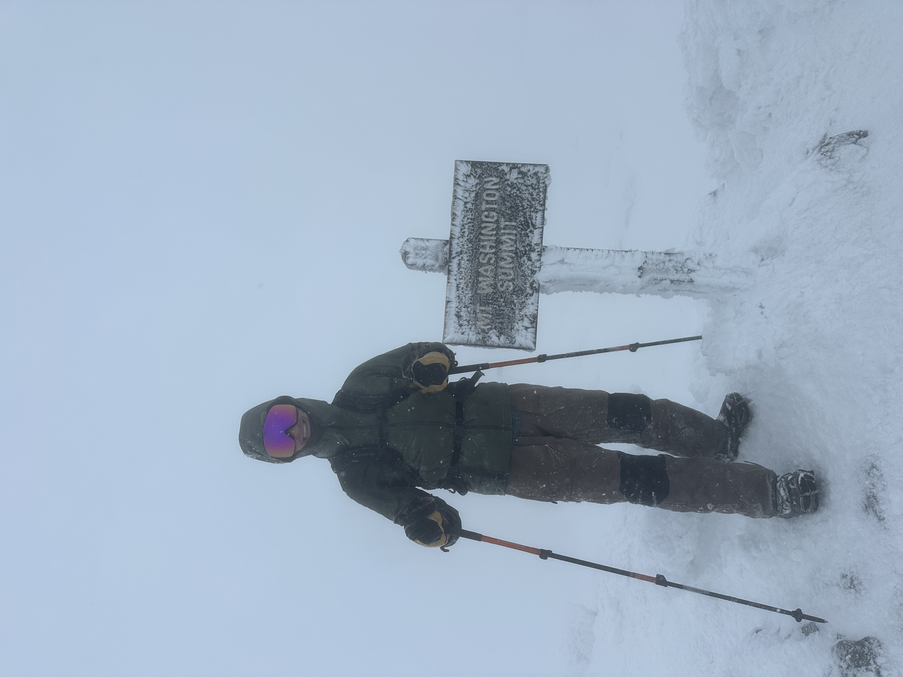
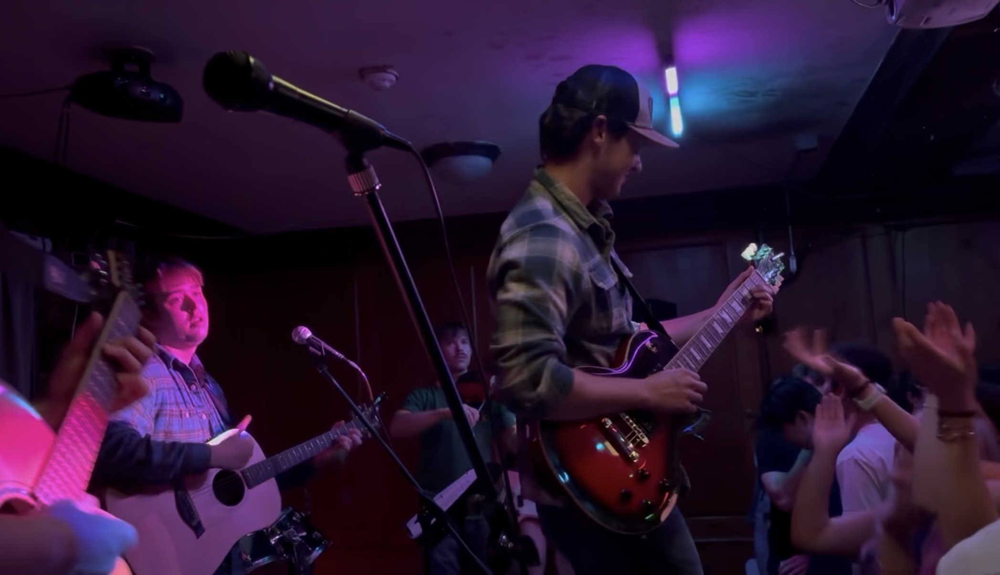

Dartmouth Economics '26
Economics Major and Entrepreneurial Problem Solver.
I graduated from Dartmouth in June 2026 with a degree in economics and a concentration in finance. I co-founded Pest OS, where we manage the entire customer lifecycle for pest and wildlife control operators. As a venture analyst at GHC Partners, I built the fund's LP outreach infrastructure from scratch, ran traditional investment and market analysis, built three proprietary databases covering 100+ potential LPs, and produced macroeconomic research included in LP reports three times.
jack.w.cook.26@dartmouth.edu · LinkedIn
Professional
I co-founded Pest OS, where we built a system that handles missed calls, books jobs, and manages the full customer lifecycle for pest and wildlife operators. We have paying customers, won the Magnuson Founder's Grant from Dartmouth, and I've pitched companies in parking lots across New Hampshire to get there.
At GHC Partners, I built the fund's LP outreach pipeline, ran investment and market analysis, constructed three proprietary databases, and produced macro research included in LP reports three times. I took a graduate-level business strategy course at Tuck Business School where I led an activist-investor analysis of Callaway Golf, and I wrote a paper testing whether VCs actually know more than the market.
Interests & hobbies
I fish, climb, and ski. I've fished across Canada, summited Mount Washington in winter, and went paragliding in Italy during study abroad. I speak Italian and lived in Rome for a term, which is where I met my Pest OS co-founder.
I'm a lifelong skier and taught skiing at the Dartmouth Skiway. I picked up billiards at school and ended up running the Billiards Club as president. At Dartmouth, I played lead guitar and harmonica in a band called Cherry Hills. We played a lot of Greek houses.
I love to go all in on my work. That's true whether it's starting a company, a climb, or a new song. I always give my hundred percent.



